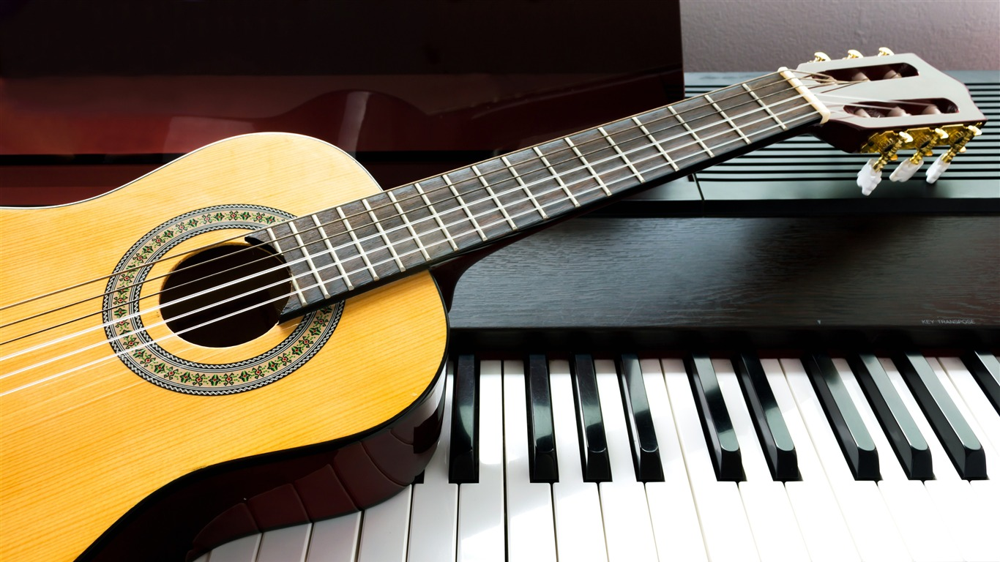

Conceito
Música é uma forma de arte que envolve a combinação de sons em uma sequência organizada e intencional. Esses sons podem ser produzidos por instrumentos musicais, voz humana, objetos do cotidiano ou por meio da tecnologia.
História
A música na antiguidade era muitas vezes associada a rituais religiosos e cerimônias, com instrumentos simples como flautas, tambores e harpas sendo usados para criar música que acompanhava danças e cânticos. Civilizações como a egípcia, grega e romana desenvolveram sua própria música, incluindo a música clássica que ainda é apreciada hoje.

Atualidade
A música na atualidade tem sido influenciada por uma grande variedade de gêneros, tendências e tecnologias. Com a crescente popularidade do streaming e das plataformas digitais, os artistas têm mais oportunidades do que nunca para alcançar um público global e compartilhar sua música com o mundo.